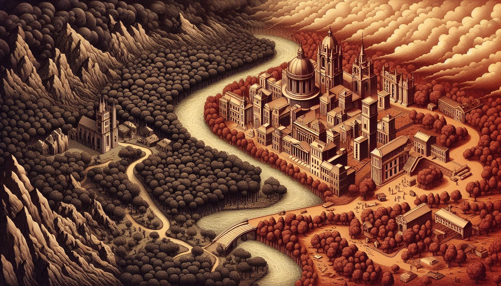

Специальный репортаж
ФИЛОСОФСКИЙ ВЕСТНИК
НОВЕЙШАЯ ЗАПАДНАЯ ФИЛОСОФИЯ · XIX — XX ВВ.
Томск, 1900 — Репортёр исследует лагеря западной мысли
Карта города

N
Нажмите на маркер лагеря, чтобы исследовать направления
Журнал путешествия
Пройдено: 0 / 9
Посетите все девять философских направлений. Начните с любого из двух лагерей.
← Карта
Философский лагерь
← К направлениям
Философское направление
Выслушать вопрос →
← К направлениям
← Назад
Вопрос философского направления
Специальный репортаж завершён
Все направления изучены. Репортёрская книжка заполнена.
Вы исследовали все девять направлений Новейшей западной философии и выслушали их ключевые вопросы.
Направлений изучено: 0 / 9
← Вернуться на карту